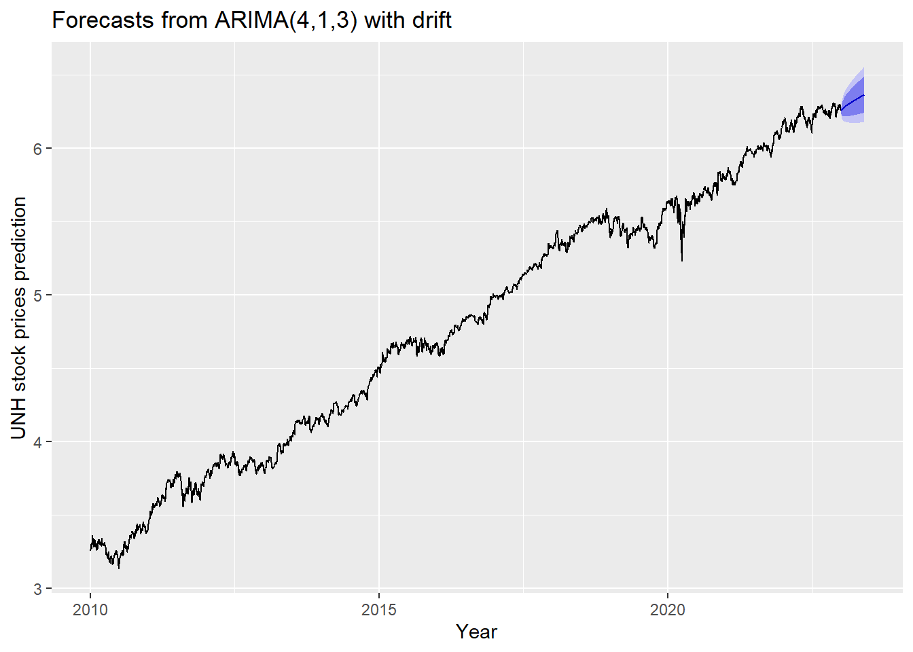

ARMA/ARIMA/SARIMA Models for UNH
Step 1: Determine the stationality of time series
Stationality is a pre-requirement of training ARIMA model. This is because term ‘Auto Regressive’ in ARIMA means it is a linear regression model that uses its own lags as predictors, which work best when the predictors are not correlated and are independent of each other. Stationary time series make sure the statistical properties of time series do not change over time.
Based on information obtained from both ACF graphs and Augmented Dickey-Fuller Test, the time series data is non-stationary.
Show the code
UNH_acf <- ggAcf(UNH_ts,100)+ggtitle("UNH ACF Plot")
UNH_pacf <- ggPacf(UNH_ts)+ggtitle("PACF Plot for UHNs")
grid.arrange(UNH_acf, UNH_pacf,nrow=2)Show the code
tseries::adf.test(UNH_ts)
Augmented Dickey-Fuller Test
data: UNH_ts
Dickey-Fuller = -1.0864, Lag order = 14, p-value = 0.9248
alternative hypothesis: stationaryStep 2: Eliminate Non-Stationality
Since this data is non-stationary, it is important to necessary to convert it to stationary time series. This step employs a series of actions to eliminate non-stationality, i.e. log transformation and differencing the data. It turns out the log transformed and 1st differened data has shown good stationary property, there are no need to go further at 2nd differencing. What is more, the Augmented Dickey-Fuller Test also confirmed that the log transformed and 1st differenced data is stationary. Therefore, the log transformation and 1st differencing would be the actions taken to eliminate the non-stationality.
Show the code
plot1<- ggAcf(log(UNH_ts) %>%diff(), 50, main="ACF Plot for Log Transformed & 1st differenced Data")
plot2<- ggAcf(log(UNH_ts) %>%diff()%>%diff(),50, main="ACF Plot for Log Transformed & 2nd differenced Data")
grid.arrange(plot1, plot2,nrow=2)Show the code
tseries::adf.test(log(UNH_ts) %>%diff())
Augmented Dickey-Fuller Test
data: log(UNH_ts) %>% diff()
Dickey-Fuller = -16.952, Lag order = 14, p-value = 0.01
alternative hypothesis: stationaryStep 3: Determine p,d,q Parameters
The standard notation of ARIMA(p,d,q) include p,d,q 3 parameters. Here are the representations: - p: The number of lag observations included in the model, also called the lag order; order of the AR term. - d: The number of times that the raw observations are differenced, also called the degree of differencing; number of differencing required to make the time series stationary. - q: order of moving average; order of the MA term. It refers to the number of lagged forecast errors that should go into the ARIMA Model.
Show the code
plot3<- ggPacf(log(UNH_ts) %>%diff(),50, main="PACF Plot for Log Transformed & 1st differenced Data")
grid.arrange(plot1,plot3)According to the PACF plot and ACF plot above, here choose the range of p value and q value as 1-4 and 1-3, respectively. Since I only differenced the data once, the d would be 1.
Step 4: Fit ARIMA(p,d,q) model
Before fitting the data with ARIMA(p,d,q) model, we will need to choose the set of parameters based on error measurement and model diagnostics. Based on the result below, ARIMA(4,1,3) has lowest error measurement.
Show the code
################ Check for different combinations ######
d=1
i=1
temp= data.frame()
ls=matrix(rep(NA,6*12),nrow=12) # roughly nrow = 3x4x2
for (p in 2:5)# p=1,2,3,4 : 4
{
for(q in 2:4)# q=1,2,3 :3
{
for(d in 1:1)# d=1,2 :2
{
if(p-1+d+q-1<=8)
{
model<- Arima(log(UNH_ts),order=c(p-1,d,q-1),include.drift=TRUE)
ls[i,]= c(p-1,d,q-1,model$aic,model$bic,model$aicc)
i=i+1
#print(i)
}
}
}
}
temp= as.data.frame(ls)
names(temp)= c("p","d","q","AIC","BIC","AICc")
kable(temp) %>%
kable_styling(font_size = 12)| p | d | q | AIC | BIC | AICc |
|---|---|---|---|---|---|
| 1 | 1 | 1 | -17710.12 | -17685.76 | -17710.11 |
| 1 | 1 | 2 | -17719.11 | -17688.66 | -17719.09 |
| 1 | 1 | 3 | -17745.61 | -17709.07 | -17745.59 |
| 2 | 1 | 1 | -17716.76 | -17686.31 | -17716.74 |
| 2 | 1 | 2 | -17772.64 | -17736.10 | -17772.61 |
| 2 | 1 | 3 | -17747.50 | -17704.86 | -17747.46 |
| 3 | 1 | 1 | -17746.22 | -17709.68 | -17746.19 |
| 3 | 1 | 2 | -17745.07 | -17702.44 | -17745.04 |
| 3 | 1 | 3 | -17789.34 | -17740.62 | -17789.30 |
| 4 | 1 | 1 | -17728.60 | -17685.97 | -17728.56 |
| 4 | 1 | 2 | -17757.45 | -17708.73 | -17757.41 |
| 4 | 1 | 3 | -17798.95 | -17744.14 | -17798.90 |
Error measurement
Show the code
temp[which.min(temp$AIC),] p d q AIC BIC AICc
12 4 1 3 -17798.95 -17744.14 -17798.9 p d q AIC BIC AICc
12 4 1 3 -17798.95 -17744.14 -17798.9 p d q AIC BIC AICc
12 4 1 3 -17798.95 -17744.14 -17798.9Show the code
fit1 <- Arima(log(UNH_ts), order=c(4, 1, 3),include.drift = TRUE)
summary(fit1)Series: log(UNH_ts)
ARIMA(4,1,3) with drift
Coefficients:
ar1 ar2 ar3 ar4 ma1 ma2 ma3 drift
-0.6673 0.7666 0.7124 -0.0768 0.6040 -0.7506 -0.7104 9e-04
s.e. 0.0485 0.0455 0.0545 0.0218 0.0461 0.0382 0.0512 2e-04
sigma^2 = 0.0002496: log likelihood = 8908.48
AIC=-17798.95 AICc=-17798.9 BIC=-17744.14
Training set error measures:
ME RMSE MAE MPE MAPE
Training set 4.453197e-06 0.01577582 0.01103893 -0.0006003827 0.2395419
MASE ACF1
Training set 0.04432579 -0.0008705228Model Diagnostics
- Inspection of the time plot of the standardized residuals below shows no obvious patterns.
- Notice that there may be outliers, with a few values exceeding 3 standard deviations in magnitude.
- The ACF of the standardized residuals shows no apparent departure from the model assumptions, no significant lags shown.
- The normal Q-Q plot of the residuals shows that the assumption of normality is reasonable, with the exception of the fat-tailed.
- The model appears to fit well.
Show the code
model_output <- capture.output(sarima(log(UNH_ts), 4,1,3))Show the code
cat(model_output[91:130], model_output[length(model_output)], sep = "\n") #to get rid of the convergence status and details of the optimization algorithm used by the sarima() final value -4.149087
converged
$fit
Call:
arima(x = xdata, order = c(p, d, q), seasonal = list(order = c(P, D, Q), period = S),
xreg = constant, transform.pars = trans, fixed = fixed, optim.control = list(trace = trc,
REPORT = 1, reltol = tol))
Coefficients:
ar1 ar2 ar3 ar4 ma1 ma2 ma3 constant
-0.6673 0.7666 0.7124 -0.0768 0.6040 -0.7506 -0.7104 9e-04
s.e. 0.0485 0.0455 0.0545 0.0218 0.0461 0.0382 0.0512 2e-04
sigma^2 estimated as 0.0002489: log likelihood = 8908.48, aic = -17798.95
$degrees_of_freedom
[1] 3255
$ttable
Estimate SE t.value p.value
ar1 -0.6673 0.0485 -13.7699 0e+00
ar2 0.7666 0.0455 16.8610 0e+00
ar3 0.7124 0.0545 13.0760 0e+00
ar4 -0.0768 0.0218 -3.5325 4e-04
ma1 0.6040 0.0461 13.1042 0e+00
ma2 -0.7506 0.0382 -19.6542 0e+00
ma3 -0.7104 0.0512 -13.8675 0e+00
constant 0.0009 0.0002 6.1278 0e+00
$AIC
[1] -5.454781
$AICc
[1] -5.454768
$BIC
[1] -5.437983
NACompare with auto.arima() function
auto.arima() returns best ARIMA model according to either AIC, AICc or BIC value. The function conducts a search over possible model within the order constraints provided. However, this method is not reliable sometimes. It fits a different model than ACF/PACF plots suggest. This is because auto.arima() usually return models that are more complex as it prefers more parameters compared than to the for example BIC.
Show the code
auto.arima(log(UNH_ts))Series: log(UNH_ts)
ARIMA(1,1,0) with drift
Coefficients:
ar1 drift
-0.0821 9e-04
s.e. 0.0174 3e-04
sigma^2 = 0.0002582: log likelihood = 8850.38
AIC=-17694.76 AICc=-17694.76 BIC=-17676.49Step 5: Forecast
The blue part in graph below forecast the next 100 values of UNH stock price in 80% and 95% confidence level.
Show the code
log(UNH_ts) %>%
Arima(order=c(4,1,3),include.drift = TRUE) %>%
forecast(100) %>%
autoplot() +
ylab("UNH stock prices prediction") + xlab("Year")
Step 6: Compare ARIMA model with the benchmark methods
Forecasting benchmarks are very important when testing new forecasting methods, to see how well they perform against some simple alternatives.
Average method
Here, the forecast of all future values are equal to the average of the historical data. The residual plot of this method is not stationary.
Show the code
f1<-meanf(log(UNH_ts), h=251) #mean
#summary(f1)
checkresiduals(f1)#serial correlation ; Lung Box p <0.05
Ljung-Box test
data: Residuals from Mean
Q* = 1046300, df = 501, p-value < 2.2e-16
Model df: 1. Total lags used: 502Naive method
This method simply set all forecasts to be the value of the last observation. According to error measurement here, ARIMA(4,1,3) outperform the average method.
Show the code
f2<-naive(log(UNH_ts), h=11) # naive method
summary(f2)
Forecast method: Naive method
Model Information:
Call: naive(y = log(UNH_ts), h = 11)
Residual sd: 0.0161
Error measures:
ME RMSE MAE MPE MAPE MASE
Training set 0.0009204042 0.01614298 0.01110733 0.01941981 0.2408094 0.04460044
ACF1
Training set -0.08216434
Forecasts:
Point Forecast Lo 80 Hi 80 Lo 95 Hi 95
2023.004 6.257173 6.236484 6.277861 6.225533 6.288812
2023.008 6.257173 6.227915 6.286430 6.212427 6.301918
2023.012 6.257173 6.221340 6.293005 6.202371 6.311974
2023.016 6.257173 6.215796 6.298549 6.193893 6.320452
2023.020 6.257173 6.210913 6.303432 6.186424 6.327921
2023.024 6.257173 6.206497 6.307848 6.179671 6.334674
2023.028 6.257173 6.202437 6.311908 6.173462 6.340883
2023.032 6.257173 6.198658 6.315687 6.167682 6.346663
2023.036 6.257173 6.195108 6.319237 6.162254 6.352092
2023.040 6.257173 6.191751 6.322594 6.157119 6.357226
2023.044 6.257173 6.188558 6.325787 6.152236 6.362109Show the code
checkresiduals(f2)#serial correlation ; Lung Box p <0.05
Ljung-Box test
data: Residuals from Naive method
Q* = 685.37, df = 502, p-value = 8.794e-08
Model df: 0. Total lags used: 502Seasonal naive method
This method is useful for highly seasonal data, which can set each forecast to be equal to the last observed value from the same season of the year. Here seasonal naive is used to forecast the next 4 values for the UNH stock price series.
Show the code
f3<-snaive(log(UNH_ts), h=4) #seasonal naive method
summary(f3)
Forecast method: Seasonal naive method
Model Information:
Call: snaive(y = log(UNH_ts), h = 4)
Residual sd: 0.2754
Error measures:
ME RMSE MAE MPE MAPE MASE ACF1
Training set 0.2432513 0.2753742 0.2490408 5.098921 5.207824 1 0.9842087
Forecasts:
Point Forecast Lo 80 Hi 80 Lo 95 Hi 95
2023.004 6.172414 5.819508 6.525321 5.632691 6.712138
2023.008 6.186518 5.833612 6.539424 5.646794 6.726241
2023.012 6.189044 5.836138 6.541951 5.649321 6.728768
2023.016 6.197327 5.844421 6.550233 5.657603 6.737050Show the code
checkresiduals(f3) #serial correlation ; Lung Box p <0.05
Ljung-Box test
data: Residuals from Seasonal naive method
Q* = 226574, df = 502, p-value < 2.2e-16
Model df: 0. Total lags used: 502Drift Method
A variation on the naïve method is to allow the forecasts to increase or decrease over time, where the amount of change over time is set to be the average change seen in the historical data.
Show the code
f4 <- rwf(log(UNH_ts),drift=TRUE, h=20)
summary(f4)
Forecast method: Random walk with drift
Model Information:
Call: rwf(y = log(UNH_ts), h = 20, drift = TRUE)
Drift: 9e-04 (se 3e-04)
Residual sd: 0.0161
Error measures:
ME RMSE MAE MPE MAPE
Training set 1.071097e-16 0.01611672 0.0110743 -0.0004837745 0.2401268
MASE ACF1
Training set 0.04446783 -0.08216434
Forecasts:
Point Forecast Lo 80 Hi 80 Lo 95 Hi 95
2023.004 6.258093 6.237432 6.278754 6.226495 6.289691
2023.008 6.259013 6.229790 6.288237 6.214320 6.303706
2023.012 6.259934 6.224137 6.295730 6.205188 6.314680
2023.016 6.260854 6.219514 6.302195 6.197629 6.324079
2023.020 6.261775 6.215547 6.308002 6.191076 6.332473
2023.024 6.262695 6.212048 6.313342 6.185237 6.340153
2023.028 6.263615 6.208902 6.318329 6.179938 6.347292
2023.032 6.264536 6.206036 6.323036 6.175068 6.354004
2023.036 6.265456 6.203398 6.327514 6.170546 6.360366
2023.040 6.266377 6.200952 6.331802 6.166318 6.366435
2023.044 6.267297 6.198668 6.335926 6.162338 6.372256
2023.048 6.268217 6.196526 6.339909 6.158575 6.377860
2023.052 6.269138 6.194508 6.343768 6.155001 6.383275
2023.056 6.270058 6.192599 6.347517 6.151595 6.388522
2023.060 6.270979 6.190788 6.351169 6.148338 6.393619
2023.064 6.271899 6.189066 6.354732 6.145217 6.398581
2023.068 6.272819 6.187424 6.358214 6.142219 6.403420
2023.072 6.273740 6.185856 6.361624 6.139333 6.408147
2023.076 6.274660 6.184354 6.364966 6.136549 6.412771
2023.080 6.275581 6.182914 6.368247 6.133860 6.417301Show the code
checkresiduals(f4)
Ljung-Box test
data: Residuals from Random walk with drift
Q* = 685.37, df = 501, p-value = 7.477e-08
Model df: 1. Total lags used: 502Show the code
autoplot(UNH_ts) +
autolayer(meanf(UNH_ts, h=100),
series="Mean.tr", PI=FALSE) +
autolayer(naive((UNH_ts), h=100),
series="Naïve.tr", PI=FALSE) +
autolayer(rwf((UNH_ts), drift=TRUE, h=100),
series="Drift.tr", PI=FALSE) +
autolayer(forecast(Arima((UNH_ts), order=c(4, 1, 3),include.drift = TRUE),100),
series="fit",PI=FALSE) +
ggtitle("UNH Stock Price") +
xlab("Time") + ylab("Log(Price)") +
guides(colour=guide_legend(title="Forecast"))According to the graph above, ARIMA(4,1,3) outperform most of benchmark method, though its performance is very similar to drift method.